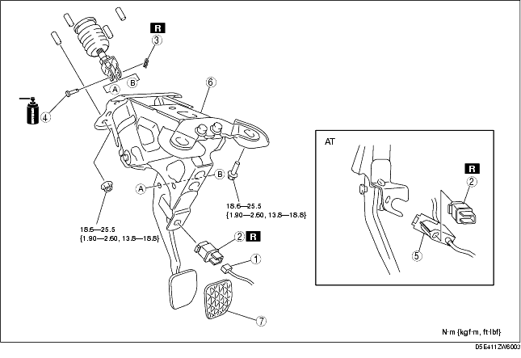
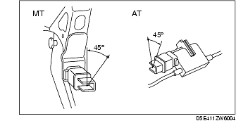

Workshop Manual ➭ BRAKES ➭ CONVENTIONAL BRAKE SYSTEM ➭ BRAKE PEDAL REMOVAL/INSTALLATION
BRAKE PEDAL REMOVAL/INSTALLATION
id041100801200
{: #wp1059778}
Caution
• The clearance between the brake switch and the brake pedal is automatically adjusted to the correct amount when the brake switch connector is connected after the brake switch has been properly installed. If the brake switch is not properly installed or the connector is connected before installation, the clearance may be incorrect, causing a brake light malfunction. Therefore, always verify that the brake switch is properly installed before connecting the connector. {: #wp1062475}• Once the brake switch clearance has automatically been adjusted, it cannot be adjusted again. Therefore, replace the switch with a new one when replacing the power brake unit or the pedal, or performing any procedure that changes the pedal stroke. {: #wp1059796}• When replacing the brake pedal (AT), it is possible that the installation of the interlock cable could become defective. Always refer to the interlock cable installation note when replacing the brake pedal. (See Interlock Cable Installation Note.)
*Note*{: #wp1059824}
• When the brake switch connector is connected to the brake switch, the clearance between the pedal and the brake switch is adjusted automatically. However, this mechanism will only function one time.
-
Remove in the order indicated in the table.
-
Install in the reverse order of removal.

|
Brake switch connector {: #wp1059893} (See Brake Switch Connector Installation Note.) {: #wp1059957} |
|
|---|---|
|
2 {: #wp1059931} |
Brake switch {: #wp1059934} (See Brake Switch Installation Note.) {: #wp1059981} |
|
3 {: #wp1059938} |
Snap pin {: #wp1059941} |
|
4 {: #wp1060003} |
Clevis pin {: #wp1060006} |
|
5 {: #wp1060024} |
Interlock cable (AT) {: #wp1060027} (See Interlock Cable Installation Note.) {: #wp1060047} |
|
6 {: #wp1060059} |
Brake pedal {: #wp1060062} (See Brake Pedal Removal Note.) {: #wp1060084} |
|
7 {: #wp1060096} |
Pedal pad {: #wp1060099} |
Brake Pedal Removal Note
-
Move the power brake unit to the vehicle front where the power brake unit fork does not interfere with the brake pedal arm.
-
Remove the brake pedal.
Brake Switch Installation Note
- Install the new brake switch to the brake pedal (MT) or the interlock cable (AT), and secure it by turning it counterclockwise 45° (MT) or clockwise 45° (AT).{: #wp1060200}

Brake Switch Connector Installation Note
-
Inspect the brake pedal. (See BRAKE PEDAL INSPECTION.)
-
With the brake pedal in its original position, install the brake switch to the brake switch connector.